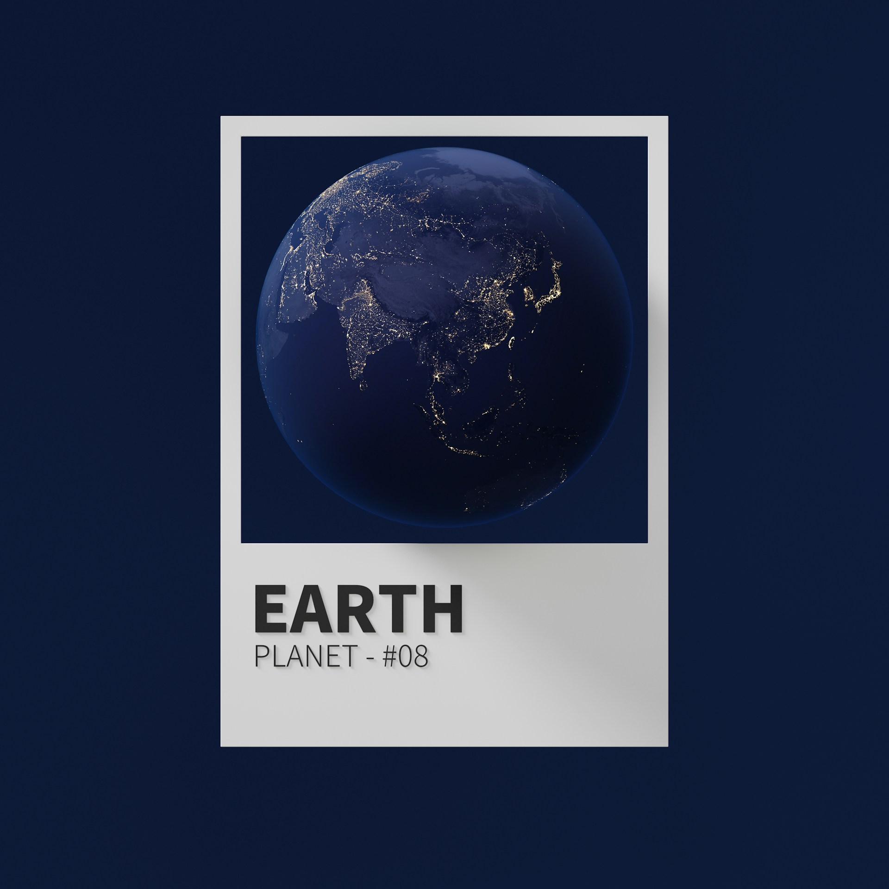

|
Planet Bumi adalah planet ketiga dari Matahari dalam tata surya dan satu-satunya planet yang diketahui mendukung kehidupan. Bumi berdiameter sekitar 12.742 kilometer. Permukaannya terdiri dari sekitar 71% air dan 29% daratan. Atmosfer Bumi kaya akan oksigen 21% dan nitrogen 78%, yang sangat penting untuk kehidupan makhluk hidup. Atmosfer juga melindungi Bumi dari radiasi Matahari yang berbahaya dan membantu menjaga suhu yang stabil.Bumi berputar pada porosnya selama 24 jam, yang menciptakan siklus siang dan malam, serta mengelilingi Matahari dalam waktu sekitar 365 hari, yang menyebabkan terjadinya perubahan musim. Struktur internal Bumi terdiri dari inti, mantel, dan kerak. Di permukaannya hidup berbagai makhluk hidup termasuk manusia, hewan, dan tumbuhan. Bumi juga memiliki satu satelit alami, yaitu Bulan, yang memengaruhi pasang surut air laut dan membantu menstabilkan kemiringan sumbu rotasinya |
|
|  |